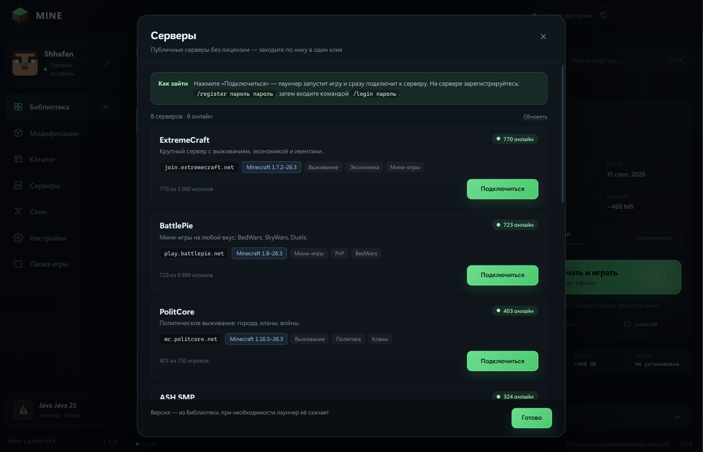

Офлайн-вход по нику
Ввёл ник — играешь. Без Mojang, Microsoft и паролей. Игре интернет не нужен.
Windows 10/11 · без аккаунта Mojang
Лаунчер сам скачает игру, нужную Java и моды. Введи ник — и играй. Ни Microsoft-аккаунта, ни паролей, ни лишних движений.

Возможности
От первого запуска до любимой сборки с модами.
Ввёл ник — играешь. Без Mojang, Microsoft и паролей. Игре интернет не нужен.
Релизы, снапшоты, старые версии, альфы и беты — от первой классики до 26.3.
Fabric, Quilt, Forge, NeoForge и OptiFine устанавливаются прямо из лаунчера.
Моды, шейдеры и готовые сборки с Modrinth: поиск, версия, загрузчик — и установка в один клик. Зависимости ставятся сами.
8 публичных серверов без лицензии: онлайн, версии и загрузка видны сразу. Нажми «Подключиться» — игра запустится и зайдёт сама.
Нарисуй свой в редакторе или выбери готовый: Стив, Алекс, Нотч, Дрим, Техноблейд и другие. Скин сразу виден в игре.
Подходящая версия Java скачивается сама — Zulu, а при сбое Adoptium.
Прогресс загрузки, консоль игры и безопасная отмена запуска в один клик.
Скриншоты
Тёмный интерфейс, ничего лишнего.


Каталог
Каталог берёт проекты с Modrinth: 8 600+ модов, 300+ шейдеров и 680+ сборок для актуальных версий. У каждой карточки видно, под какие версии Minecraft подходит мод, шейдер или сборка. Файлы качаются по клику — в установщике их нет, поэтому он остаётся лёгким.

Fabric, Quilt, Forge и NeoForge. Лаунчер сам находит подходящую версию файла и ставит нужные библиотеки.
Complementary, BSL и другие — сразу в shaderpacks. Работают с Iris на Fabric и NeoForge.
Готовые .mrpack: моды, конфиги и загрузчик устанавливаются вместе, версия появляется в библиотеке.
Выбери лицо в редакторе — скин применится к персонажу при запуске. Без регистраций и лишних сайтов.


Серверы
Восемь проверенных серверов без лицензии: онлайн, поддерживаемые версии и загрузка видны сразу. Нажмите «Подключиться» — лаунчер запустит игру и сам подключит к серверу. Свой адрес тоже можно ввести вручную.

/register, затем входите через /login.
Видео
Полторы минуты: установка из каталога лаунчера и скачивание тех же файлов с Modrinth в браузере.
Установка
Файл MINE-Launcher-Setup-1.2.0.exe (~103 МБ) с GitHub Releases. Права администратора не нужны.
Запусти файл и следуй мастеру. Ярлык появится в «Пуск» и на рабочем столе.
Выбери версию, нажми «Скачать и играть». Java и файлы игра скачает сама.
%APPDATA%\MINE Launcher, игра — в %APPDATA%\.minecraft.
MINE Launcher.exe. Скачать:
MINE-Launcher-1.2.0-win64.zip (~140 МБ).
FAQ
Нет. Лаунчер работает в офлайн-режиме: достаточно любого ника. Аккаунт Mojang или Microsoft не требуется.
Да. В лаунчере есть список из 8 публичных серверов без лицензии — нажмите «Подключиться», и игра запустится с подключением к нему. На сервере зарегистрируйтесь: /register пароль пароль, затем /login пароль. На официальных серверах с проверкой лицензии офлайн-вход не подойдёт.
Откройте «Серверы» и внизу введите адрес вида play.example.com или 1.2.3.4:25565. Лаунчер подключится на выбранной в библиотеке версии. Сервер должен быть в режиме online-mode=false.
Из открытой базы Modrinth. Лаунчер ищет файл под выбранную версию Minecraft и загрузчик, качает его и обязательные зависимости прямо в папку mods, shaderpacks или ставит сборку целиком. На каждой карточке видно, для каких версий игры подходит проект. Интернет нужен только в момент установки.
Нет. Это файлы скинов известных персонажей и игроков: лаунчер скачивает PNG и подставляет его вашей офлайн-модели. Ник и аккаунт не меняются.
В %APPDATA%\MINE Launcher\skin\skin.png. При запуске лаунчер собирает ресурспак и подставляет скин всем стандартным моделям персонажа.
Все релизы, снапшоты, альфы и беты из официального манифеста Mojang. Для новых версий Java скачивается автоматически.
Лаунчер не запрашивает пароли и не отправляет ник на сторонние серверы. Файлы игры и Java загружаются с официальных адресов Mojang и Azul/Adoptium. Исходный код открыт.
Сборка не куплена у центра сертификации, поэтому SmartScreen показывает «Windows protected your PC». Нажми «Подробнее» → «Выполнить в любом случае». Код открыт, установщик собран из этих же исходников.
«Параметры» → «Приложения» → MINE Launcher → «Удалить», либо ярлык «Удалить MINE Launcher» в меню «Пуск». Конфиг и папка игры в %APPDATA% остаются — удали их вручную, если не нужны.